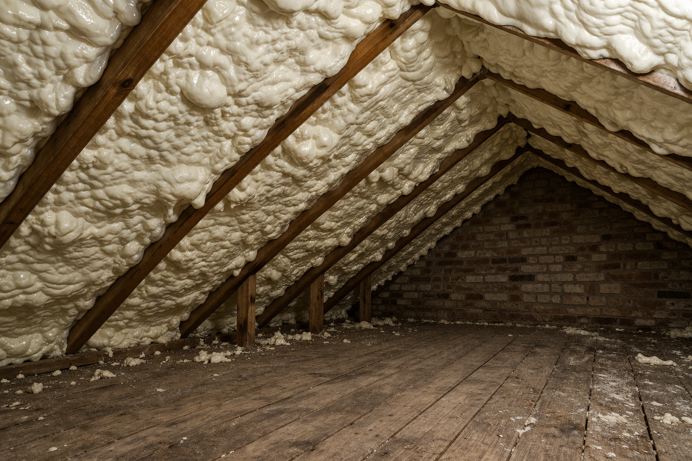

Spray foam removal
Open-cell removal, controlled methods, post-work evidence and limitations.
Learn about spray foam removalSpray foam and insulation-removal help
Insofix helps homeowners across England understand spray-foam concerns, mortgage and survey questions, open-cell or closed-cell removal options, and the evidence that can support the next decision.

The first step is a free remote photo review, not a full survey. Insofix considers the apparent foam type, roof construction, access, visible condition and your objective before suggesting further assessment, evidence, monitoring, specialist input, remediation, removal or no immediate removal.
Spray foam can create sale, remortgage or equity-release questions because lender and surveyor policies vary. Documentation can help, but it cannot force a third party to accept a property.
Open-cell removal, controlled methods, post-work evidence and limitations.
Learn about spray foam removal
Why dense, bonded foam needs careful assessment before destructive work is proposed.
Read closed-cell guidance
Calm guidance on lender variability, paperwork and the next sensible step.
Understand mortgage issuesStart with photographs and background information. If the issue cannot be assessed remotely, Insofix will explain whether a chargeable on-site assessment is the sensible next step.